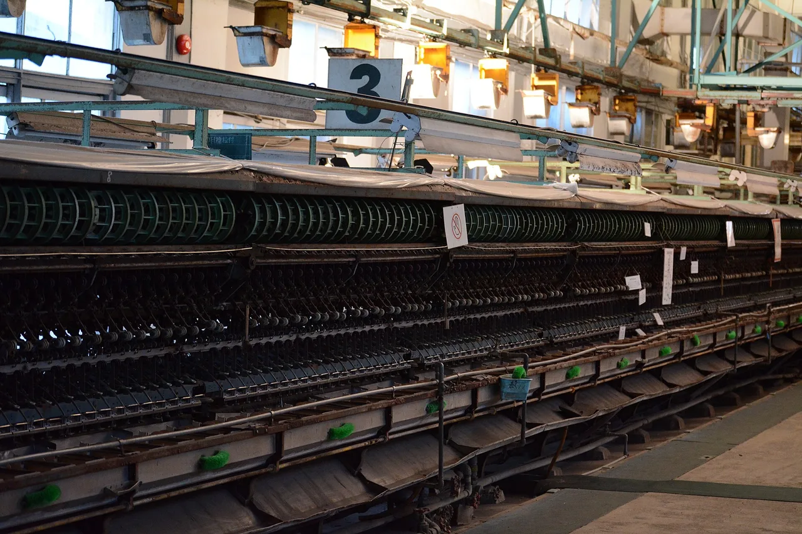

Gunma Travel Guide for Japanese Learners
Famous hot-spring resorts and a UNESCO silk-mill heritage.

Landlocked Gunma is onsen country. Kusatsu is one of Japan's most celebrated hot-spring towns, and the Tomioka Silk Mill marks the start of Japan's modern industry.
History & background
Gunma (群馬) launched Japan's modern era: the Tomioka Silk Mill (富岡製糸場), opened in 1872, mechanized silk production and is now a UNESCO site. Its mountains hide centuries-old onsen.
What to see
- Kusatsu Onsen and its yubatake hot-water field
- Ikaho Onsen's stone steps
- Tomioka Silk Mill (UNESCO)
- Mount Haruna and Lake Haruna
Hidden gems
- Fukiware Falls near Minakami offers a serene gorge hike with emerald pools and moss-covered rocks, far quieter than famous onsen crowds.
- Shibukawa Ikaho Art Museum displays regional pottery and modern art in a quiet hilltop setting overlooking the onsen town below.
- Nishi-Kiushu Village preserves traditional thatched farmhouses where visitors can experience rural Gunma life and seasonal agricultural activities firsthand.
Some links above are affiliate links. We may earn a commission at no extra cost to you. We only list services we'd use ourselves.
What to eat
Try Mizusawa udon and local konnyaku.
Getting there & when to go
Getting there: Takasaki is ~50 min from Tokyo by shinkansen; onsen towns by bus/local line.
Best time: Any season — onsen are especially welcome in cold months.
When to go — season by season
Onsen towns shine year-round but feel best in cold months. Autumn colours Mount Haruna (榛名山) and the gorges; spring is mild for hiking.
Local culture
Konnyaku (konjac jelly) production has deep roots in Gunma — locals eat it plain with miso, grilled on skewers, or in stews. You'll see dedicated konnyaku restaurants even in small towns, reflecting how central this humble ingredient is to regional identity and home cooking.
Silk-weaving culture persists quietly in rural valleys around Tomioka. Small family workshops still hand-dye and weave silk fabric using methods taught across generations; some offer brief demonstrations or sales of scarves and cloth at modest prices, keeping craft knowledge alive beyond museum exhibits.
A suggested visit
Head to Kusatsu (草津) for the steaming yubatake and a yumomi hot-water performance, then unwind at Ikaho (伊香保) with its famous stone steps. Add the Tomioka Silk Mill for a history half-day.
Seasonal tip: Visit Kusatsu Onsen between November and February for the best snow-fed water purity and therapeutic warmth, but book accommodation early as winter weekends fill with domestic visitors seeking yuzu bath events.
Local etiquette: When entering an onsen bathhouse, always rinse your entire body thoroughly at the low shower stalls before entering the communal bath — locals notice and appreciate this courtesy, especially in smaller traditional facilities where water quality is carefully maintained.
Catch the 'yumomi' hot-water-stirring performance at Kusatsu.
Some links above are affiliate links. We may earn a commission at no extra cost to you. We only list services we'd use ourselves.
Common questions
Q. How do I get from Tokyo to Gunma's hot springs?
A. Takasaki is 50 minutes from Tokyo by shinkansen; from there, local buses and trains reach Kusatsu and Ikaho onsen towns. Book accommodation ahead — onsen hotels often arrange shuttle pickups.
Q. Is Gunma worth visiting if I only have one day?
A. Yes. Visit Takasaki, then either Kusatsu Onsen's yubatake field or the UNESCO Tomioka Silk Mill. Choose one to avoid rushing; both reward slower exploration and a proper soak.
Q. What's the best time to visit Gunma's onsen?
A. Any season works, but winter months maximize the onsen experience—soaking in hot water while surrounded by snow is quintessentially Japanese. Spring and autumn offer hiking around Mount Haruna.